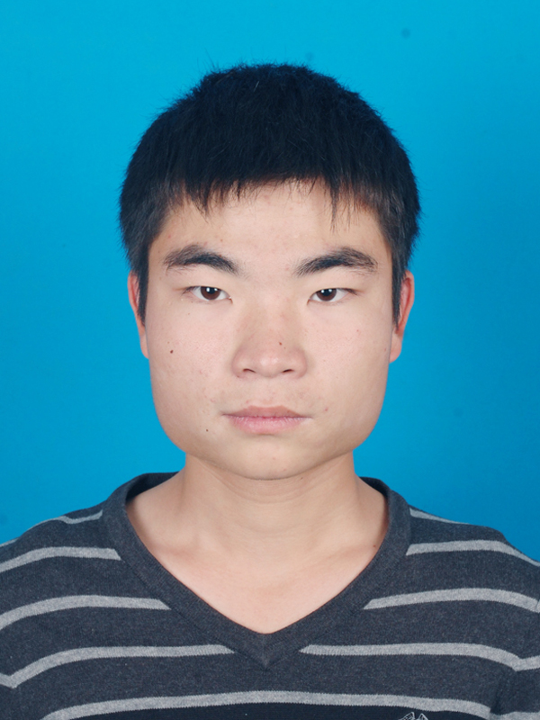

个人简历
- 姓名：徐佳兵
- 民族：汉
- 籍贯：湖北 黄冈
- 出生日期：1994年11月
- 毕业院校：滁州学院
- 电话：15755059106
- 毕业时间：2017年6月
- 性别：男
- 身高：170cm
- 政治面貌：共青团员
- 学历：本科
- 专业;自动化
- E-mail：2472858584@qq.com
- 爱好：跑步，打台球

求职意向及自我评价
期望从事职业：Web前端开发工程师
自我评价：经过大学的成长，我感觉自己在做事方面有了很大的进步，遇到事情能够沉着冷静，能够妥善处理，
性格稳重，有较强的责任心，做事比较认真，有一丝不苟的态度，但是有一点是我在做事方面比较较真，就是有时候有点固执，认定
的事情和工作一定要做出来。由于做过寝室长，有较好的协作和组织能力。同时我也认识到自己的不足，我要努力提高自己的英语水
平和与人交际的能力，方式等；另外就是要进一步加强自己的专业方面的能力，提高自己把理论用于实践的能力。在以后的日子里，
我会努力的工作，不断的充实自己，完善自己，超越自己。具备基础C编程和Java编程，掌握Web前端技术HTML5，CSS，JAVAScript.
教育经历
2013-9～2017-6 滁州学院 电子与电气工程学院
自动化专业 工学学士
主修课程
电机及电力拖动，电路分析，数字电子技术，工厂供电，电子电力技术，电气控制技术及PLC，电力拖动自动控
制系统，模拟电子技术基础， C语言程序设计，传感器原理与应用，自动控制原理，单片机应用技术。
社会实践经历
2015年8月— 2015年9月 河南许昌许继电力公司 实习
主要工作：了解电力公司各部门的职责范围和组织架构；感性认识电站各个工作岗位的工作流程及相关责任；学习电力行业安全工作
规程；对电气方面的知识有了更深刻的了解，养成了独立分析﹑解决问题的能力，同时也具备了一定的团队合作精神，工作期间得到
了领导和同事的一致认可。
2016年9月—2016年10月 合肥宏晶信息科技有限公司 嵌入式开发
主要工作：主要学习嵌入式开发，从硬件和软件两方面去了解什么是嵌入式，熟悉了整个嵌入式开发的流程，亲手做一些项目，养成
了一定的动手能力。
2014年9月—2014年10月 康佳公司 实习
主要工作：主要负责第一生产线生产电视机，负责生产和检测。
2017年7月—2017年9月 学习Web前端开发及Java基础
熟悉软件和证书
熟悉Altium Designer，Proteus,Microsoft办公软件，Sublime,Webstorm,VC等软件，了解MATLAB
证书：英语四级，计算机二级
在校活动
担任寝室长：协助班长全面搞好本宿舍成员的思想建设，组织建设，制度建设，学风建设等日常事务。
奖惩情况
所有奖励：
全国大学生电子设计竞赛安徽赛区三等奖，安徽省第七届机器人大赛三等奖，
优秀共青团员，模范寝室长，各类演讲比赛获奖.已被华东师范大学软件工程非全日制录取。
惩罚：在校四年没有受到任何处罚。